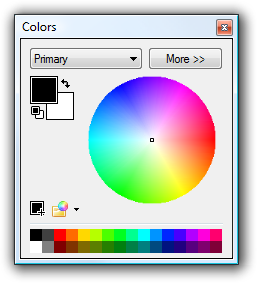

Colors Window
This window has two modes of operation: "Less" and "More". By default, Paint.NET starts up with the Colors Window in Less mode. In this mode you may easily select a base color using either the color wheel or the palette. Paint.NET allows you to have two colors selected, a primary color and a secondary color, and you may use the drop-down box at the top of the Colors Window to choose which one the Colors Window is currently being displayed and configured (you can also use the shortcut key 'C' to quickly switch between them). Some tools, such as the Paintbrush tool and the various Shape Tools, allow you to draw using either the primary color or the secondary color depending on which mouse button you use while drawing.

This mode lets you choose from the colors shown in the color wheel or the first 32 colors in the current palette. If you right click on a color in the palette, it will set the secondary color.
If you click the "More >>" button, the window will expand to present more detailed and fine-grained information. In this mode, you may specify the exact value of each of the color's components in either the RGB (Red, Green, Blue) or HSV (Hue, Saturation, Value) color space. Editing the color in hex, or hexadecimal, mode is also possible. The alpha, or transparency level, may also be configured.

Palettes
There are two buttons above the palette that let you manage the colors.
The first one adds the current color to the palette. Click on the button, and then click on the palette to place the color.
The second one opens up a drop down menu that provides various commands for managing palettes as a whole:

The first items in this list will represent any custom palettes you have already saved. Clicking on these items will load the respective palette. The last three items can be used to save the current palette to a file, to open the palette folder in Windows Explorer, and lastly to set the current palette back to the default colors. Palette files are just text (*.txt) files that are stored in your Documents folder hierarchy.
Copyright © 2007
Rick Brewster, Tom Jackson, and past contributors. Portions Copyright
© 2007 Microsoft Corporation. All Rights
Reserved.